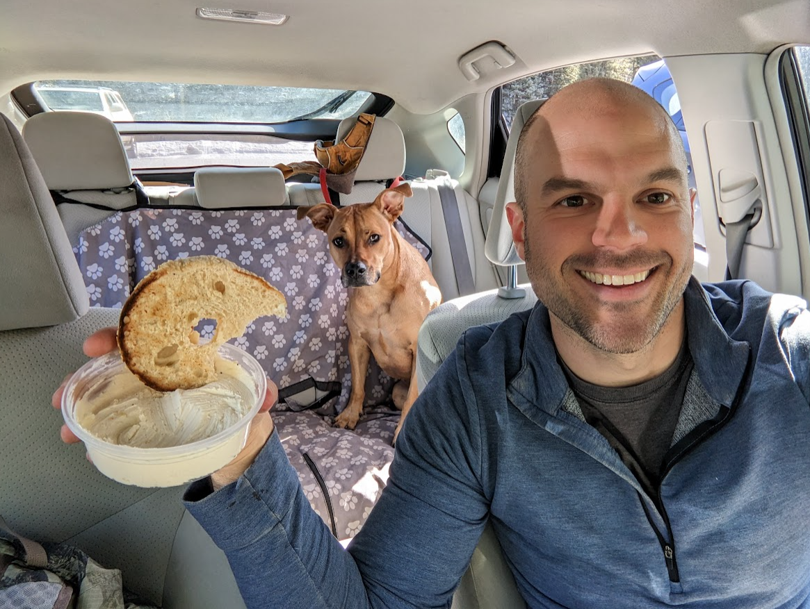

Ah, a 30 minute drive and this was the first time I felt like I’ve gotten into the mid country (not quite back country but it felt different than the front country of the other hikes up until this point). Last first, after our hike I went into the Golden Gate Canyon State Park Ranger Station (GGCSPR) and it was awesome. Tons of info, very modern, some taxidermied animals, and post cards and stickers.
I was tempted by a couple of the identification books; flowers, rocks, trees, more flowers, birds, fish, etc. but didn’t pull the trigger. They were close but not quite it.
The sun was blazing today. After a midweek dip into the negative temps (Fahrenheit) we were back up to the 40s and 50s today, but when that sun hit you, oooooooooeeeeeee, did it feel good.
This was another hike were I took the steep incline to a long, steady decline route (clockwise). The way up had my heart a pounding, reminding me of the good old Donut Shop and the custom workouts that, when you really got into them, had your head floating a few extra feet off the ground. If you’ve had the pleasure, you know what I’m talking about :)
I snapped this pic looking back down the valley, we drove in on that road, and wouldn’t you know it - when I get home I see that Kora had an extra set of eyes looking out for her on this hike. Which is good someone was watching out for her because by the end I don’t think she was having it besides when she got all excited to find a decaying mouse carcass (picture omitted, thank me later).
I think this was the high point of our hike, altitudinally speaking, and in hindsight, maybe this was where Kora started to get sick of my manic picture taking…
This is what we came here for. I believe this was close-but-under 10k feet, after a 1200 foot climb from the car over ~2 miles. It is just beautiful here. I couldn’t be happier.
After the peak it was a cool series of meadows where homesteads used to be. This one was titled something like “Old, Lonely, Crippled, and Alone” - really selling it I know - and was the story of a man who had some cows and one day, when using a cart to bring some freshly cut logs down to market, a chain snapped the the logs crushed his skull. They did not leave much to the imagination nor view this guy’s existence through rose colored glasses, that’s for sure.
We get back to the car, which I definitely locked, only to realize I left both back windows down. I’m glad none of the thieves that tried the door handles to find them locked noticed the windows weren’t simply super duper clean but were, in fact, wide open.

Luckily the bagel and cream cheese, which has become a staple after-hike snack, was still in the car. Don’t worry, I shared, contrary to what that look Kora’s giving me may imply.
Also, by the end of this hike, Kora had had enough and was protesting going the last few hundred yards. I’m not sure why, it was pretty muddy and rocky at the end and I’m not sure if her paws were sore or she was just tired. She got some extra treats (not just bagels and schmear) when we got home and she’s formally protesting any further activities today by napping soundly on my bed.